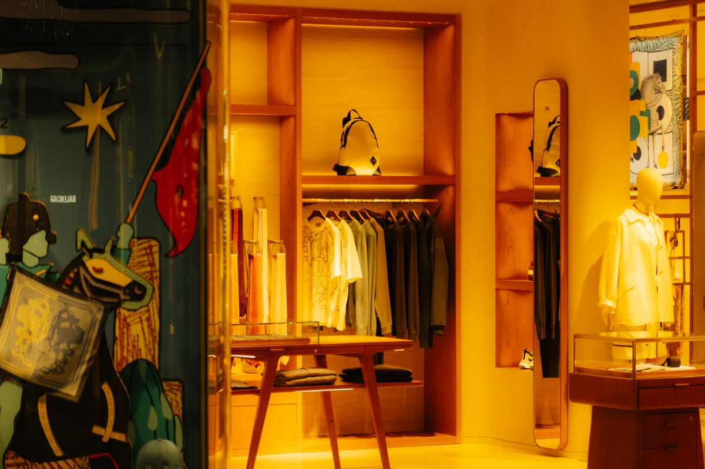
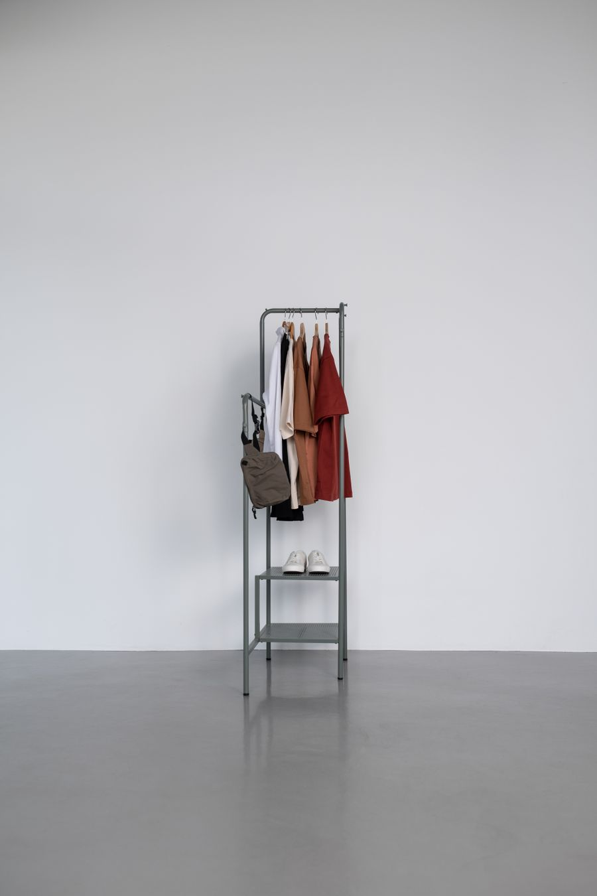
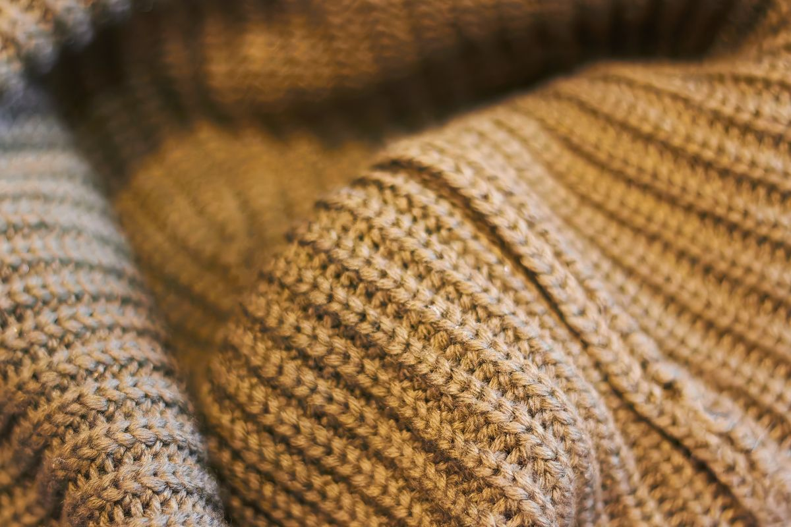

光影勾勒轮廓
色彩构筑氛围
概念示意 / 待替换作品。
SELECTED VISUALS影像选集
Concept studies / 概念示意
Atelier N°05
Spring edit / Concept
Quiet forms,
warm structure.Homepage art direction / 平面长图


材质、留白与日常光线，构成品牌首页的第一种语气。
Editorial direction / 05